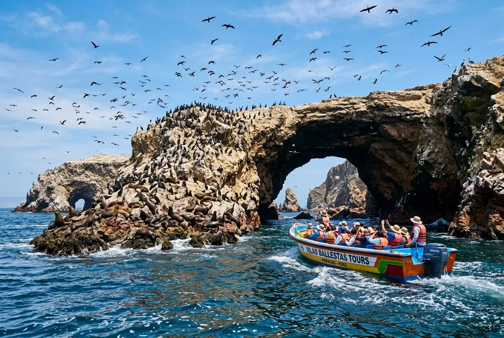
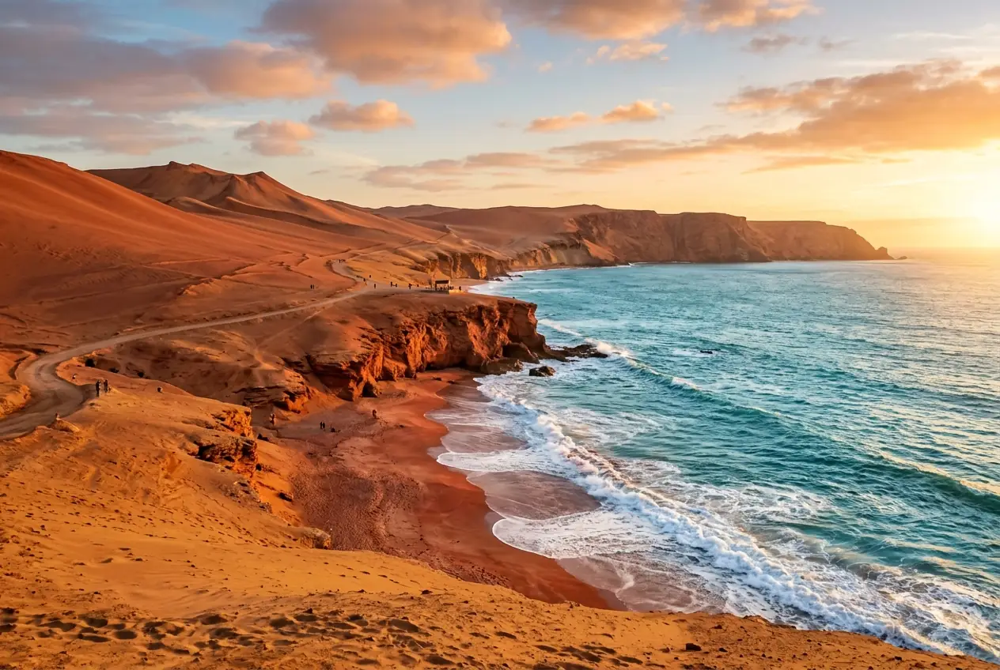
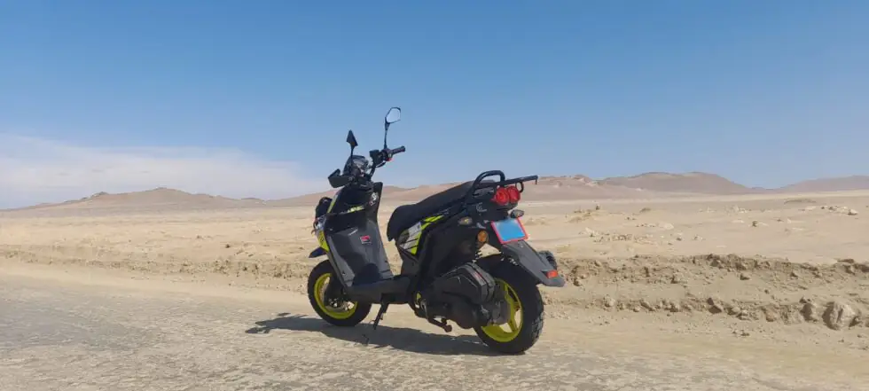

Guides
Complete Ballestas Islands Guide 2026
Total price including pier taxes, departure times, wildlife and what to bring.

Transport
3 safe ways to get to Paracas from Lima
Planning to visit Paracas from Miraflores or Barranco? Discover the safest and most comfortable options for your trip.

Guide & Map
Paracas National Reserve Circuit: by scooter, bike or on foot
Interactive map and stop-by-stop guide to explore the reserve on your own.